Tu guía completa para la gestión veterinaria moderna.
¡Hola! RedVet es tu mejor aliado para la gestión moderna de la clínica veterinaria. Nuestro propósito es conectar a los profesionales con sus clientes de forma eficiente, eliminando el papeleo del historial clínico. Además, modernizamos la experiencia del cliente a través de su aplicación complementaria: RedPet.
Descubre las ventajas fundamentales que obtienes al integrar RedVet en tu práctica diaria:
Historial Clínico Centralizado (Digital):
Todos los datos de los pacientes (consultas, vacunas, desparasitaciones, pruebas, cirugías) se almacenan de forma segura y digitalizada. ¡Di adiós a los archivos de papel!
Cliente Conectado (24/7):
El dueño puede acceder al historial de su mascota en cualquier momento y lugar a través de la app RedPet.
Compartir Historial sin Límites:
El cliente puede autorizar el acceso total al historial de su mascota a otras clínicas dentro de la red RedVet - RedPet, facilitando diagnósticos rápidos y precisos, incluso en la primera visita.
Papelería Automática:
Control de empleados:
Asigna diferentes roles a los empleados para gestionar permisos.
Organiza tus citas:
Integración Total con RedTPV:
La conexión con tu Terminal Punto de Venta es completa, simplificando cobros, inventario y cierres de caja.
Para que la aplicación esté 100% lista y adaptada a tu clínica, sigue esta sencilla secuencia de pasos:
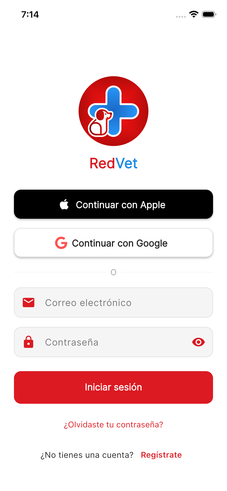
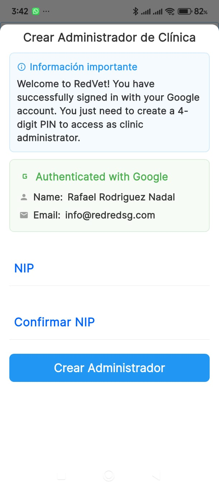
¡ATENCIÓN! Súper Importante:
Al inicio, debes crear un PIN de 4 dígitos. Este código NO se puede recuperar y es esencial para acciones sensibles.
Video explicativo: Acceso y seguridad
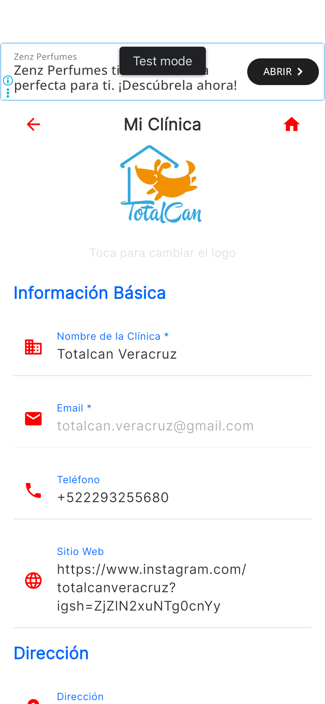
Ve al Menú Lateral → Mi Clínica para completar la información de tu negocio:
Video explicativo: Configuración de la clínica
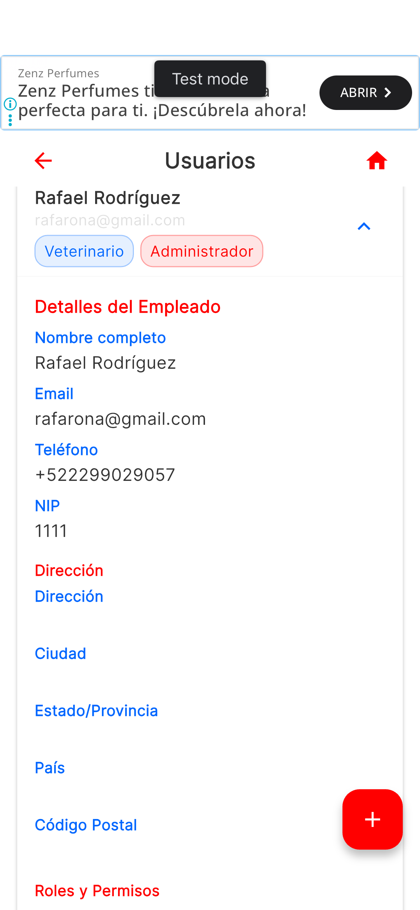
Desde el Menú Lateral → Gestión de Usuarios, puedes dar de alta a tu personal y asignarles permisos (Roles):
Video explicativo: Gestión de empleados
Una vez configurada la clínica, el siguiente paso es registrar a tus clientes y sus mascotas.
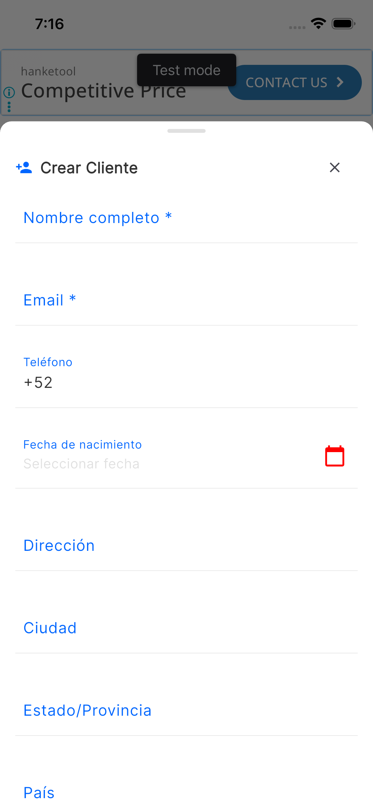
En la Pantalla Principal, pulsa el Botón Rojo (+) para crear las fichas de los dueños de las mascotas.
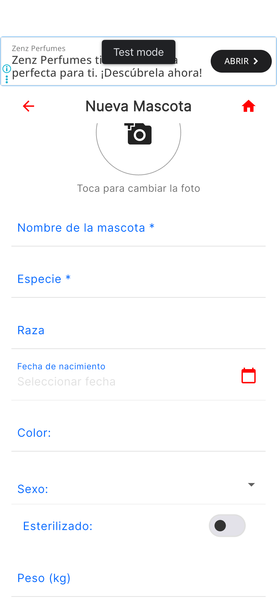
Entra a la ficha de cada cliente y utiliza la opción correspondiente para ingresar los datos de sus mascotas.
Al seleccionar una mascota, accedes a su ficha completa, donde puedes ver su información y el historial de visitas.
Video explicativo: Gestión de clientes y mascotas
Esta es la función central de RedVet: documentar la visita de un paciente.
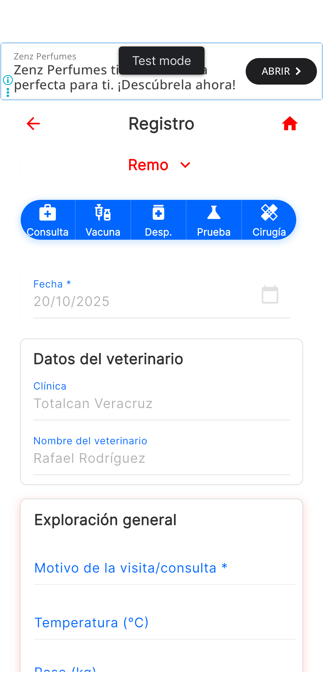
En la ficha de la mascota, elige Inclusión de Registro Clínico. Todas las fichas requieren:
Puedes completar y guardar por separado las siguientes secciones en una misma visita:
Al terminar, tienes dos opciones:
Video explicativo: Flujo de consulta (Parte 1)
Video explicativo: Flujo de consulta (Parte 2)
Funciones para gestionar tu operativa diaria de forma eficiente.
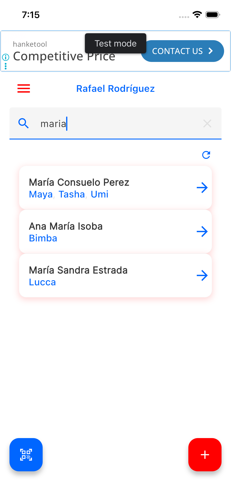
Es tu centro de control, desde donde puedes:
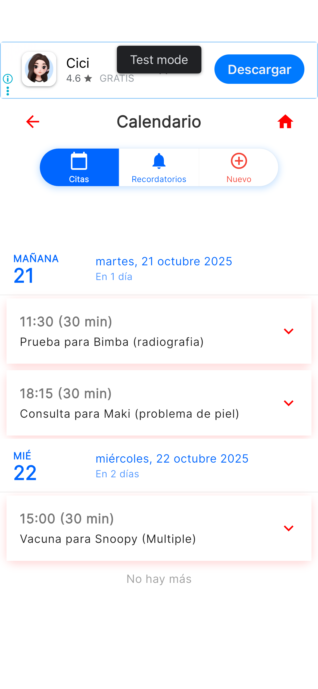
En Menú Lateral → Calendario, puedes gestionar tu agenda.
Video explicativo: Calendario y citas
Configuraciones avanzadas y opciones de gestión de la cuenta.

Desde el menú lateral, puedes:
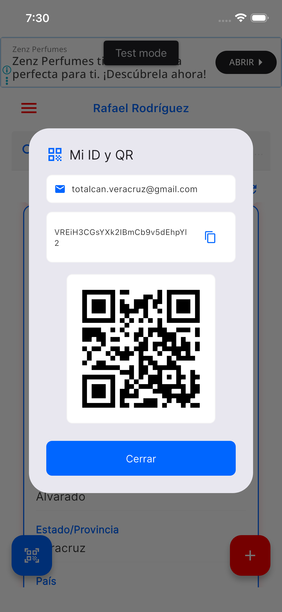
En Menú Lateral → ID/QR Clínica, encontrarás el código QR que tus clientes pueden escanear con la app RedPet para vincularse con tu clínica y compartir historiales.
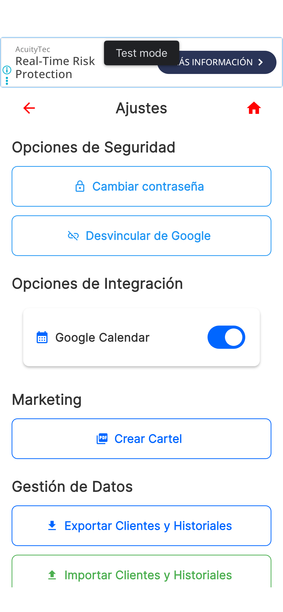
En Menú Lateral → Ajustes, tienes opciones importantes:
Video explicativo: Configuración avanzada